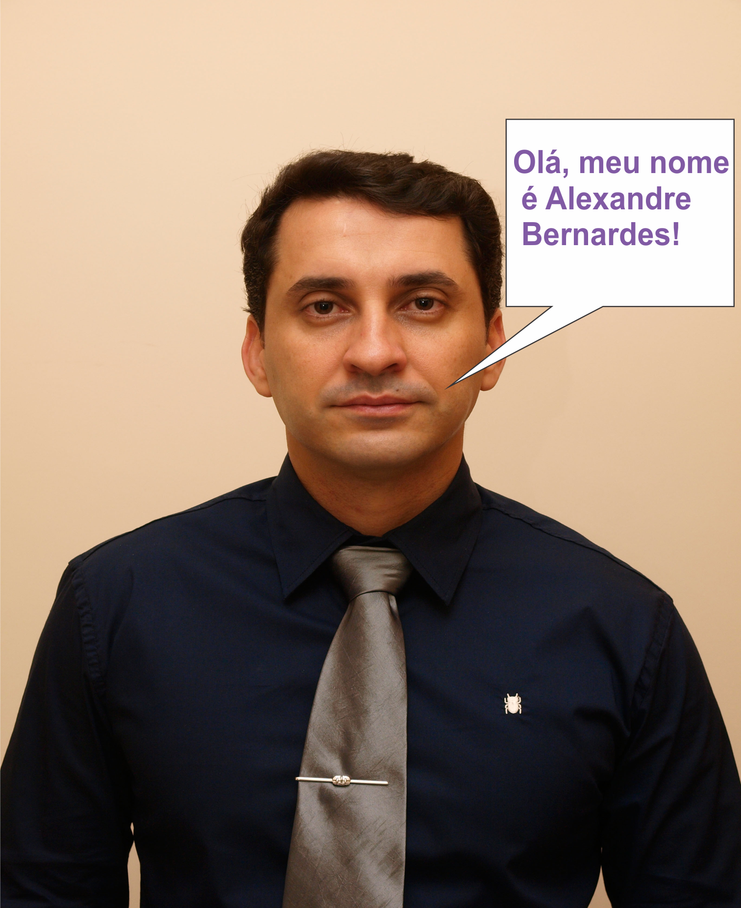

Prof. Alexandre Bernardes
Mestre em Ciência da Computação na Universidade Estadual Paulista Júlio de Mesquita Filho, UNESP de São José do Rio Preto (2011). Possui graduação em Tecnologia em Processamento de Dados pela Universidade Paulista (1998), especialização em Desenvolvimento de Sistemas Sob a Tecnologia Cliente/Servidor e Internet pelo Centro Universitário de Rio Preto (2002) e formação pedagógica para docente pela Faculdade de Tecnologia de Sorocaba (2008). É Professor e Coordenador da Faculdade de Tecnologia de Jales Prof. José Camargo - FATEC e Professor da Escola Técnica de Fernandópolis - ETEC Prof. Armando José Farinazzo. Coordenou o curso de Sistemas para Internet durante 4 anos e coordena o curso de Análise e Desenvolvimento de Sistemas desde 2017. Possui experiência na área de Ciência da Computação, com ênfase em Processamento de Imagens e Visão Computacional. Conhecedor das áreas de Banco de Dados, Desenvolvimento de Sites, Engenharia de Software, Algoritmos e Estrutura de Dados. (Texto informado pelo autor).
Conceito
Padrões de projeto para Web. Sintaxe do HTML. Elementos básicos dos conceitos de Web Design. HTML doctypes. Validação do HTML. Boas práticas com HTML e CSS: O CSS, seletores e propriedades. Formulários e estrutura de sítios Internet
Obejtivo
Apresentar os fundamentos do HTML (Hypertext Markup Language) com ênfase na semântica do uso dos elementos e nos benefícios do emprego de padrões de codificação. Demonstrar uso do CSS (Cascading Style Sheets) para separar conteúdo e apresentação, de maneira a minimizar tempo de manutenção, aumentar a velocidade do desenvolvimento e desenvolver as habilidades de design. Objetivos específicos. Os estudantes deverão ser capazes de: construir páginas Web por meio do HTML e validá-las no validador do W3C, quando for o caso. Empregar o CSS para todas as apresentações. Criar uma estrutura de diretórios adequada para sítios Internet visando a facilidade de manutenção. Saber empregar FTP para transferir arquivos para o servidor. Construir formulários de contato. Empregar um script fornecido. Criar um sítio completo com várias páginas com todos os elementos de design, HTML e CSS estudados no curso.